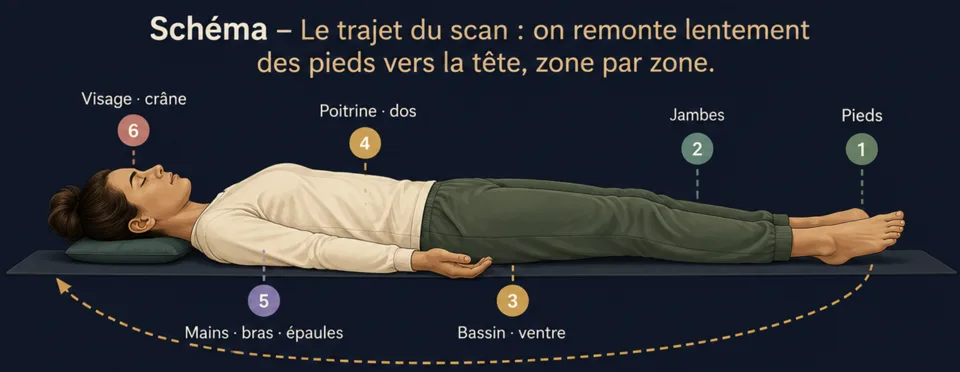

Le scan corporel : la méditation qui détend le corps
Le scan corporel expliqué pas à pas, avec son schéma : le trajet des pieds à la tête, quoi faire quand on ne sent rien, et ses trois usages.
Le scan corporel est la technique de méditation la plus accessible : promener l'attention à travers le corps et sentir ce qui est là, sans rien changer. Détente profonde, endormissement, tensions du quotidien — voici le trajet complet, pas à pas.
Qu'est-ce que le scan corporel ?
Le scan corporel est la plus simple des grandes techniques de méditation : on promène lentement l'attention à travers le corps, zone après zone, et on sent ce qui est là — chaleur, contact, picotement, lourdeur, ou rien du tout. C'est tout. On ne cherche pas à se détendre : la détente arrive en sous-produit, précisément parce qu'on ne la poursuit pas.
C'est la porte d'entrée idéale pour ceux qui « pensent trop » : l'attention a un itinéraire concret à suivre, le mental a moins d'espace pour dériver — et quand il dérive, le corps est un endroit simple où revenir.
Le trajet, pas à pas

- Installe-toi — assis ou allongé (allongé si le but est de t'endormir). Trois respirations amples pour poser le décor.
- Commence par les pieds. Orteils, plantes, talons : que sens-tu, là, maintenant ? Le contact des chaussettes, une fraîcheur, rien ? « Rien » est une observation valable.
- Remonte lentement : chevilles, mollets, genoux, cuisses… puis le bassin, le ventre, la poitrine — remarque la respiration au passage —, le dos, les épaules.
- Les zones bavardes. Mâchoire, front, nuque, épaules : c'est souvent là que la journée s'est logée. Ne force rien — poser l'attention suffit, le relâchement vient seul.
- Termine par le corps entier, senti d'un seul tenant, deux ou trois respirations. Puis rouvre les yeux — ou laisse le sommeil finir le travail.
Trois usages du scan corporel
- La détente profonde — en fin de journée, 10 à 20 minutes allongé : le corps se dépose couche par couche, comme un sable qui retombe.
- S'endormir — le scan est le cœur des méditations du soir : lancé au lit, il est rarement fini avant le sommeil.
- Les tensions du quotidien — version express de cinq minutes, assise, pour repérer où la journée s'est crispée et laisser les épaules redescendre.
Dans Awakening Minds, le balayage corporel guidé est l’une des séances de la catégorie Apprentissage — gratuit, hors ligne, avec la voix et la vitesse que tu choisis.
Questions fréquentes
Combien de temps dure un scan corporel ?
De 5 minutes (version express assise) à 20-30 minutes pour la détente profonde allongée. Pour débuter, 10 minutes guidées suffisent largement.
Assis ou allongé ?
Allongé pour la détente profonde et le soir ; assis pour rester alerte en journée. La règle : allongé si s'endormir est acceptable, assis sinon.
Pourquoi je m'endors à chaque fois ?
Parce que ça marche ! Si ce n'est pas le but, pratique assis, en journée, les yeux mi-clos — et garde la version allongée pour le coucher.
Envie de pratiquer plutôt que de lire ?
Tout ce que décrit cet article se pratique dans Awakening Minds, application de méditation gratuite : 149 méditations guidées en français — sommeil, respiration guidée, mondes immersifs — sans abonnement, sans publicité, sans compte, et tout fonctionne hors ligne.
✦ Découvrir l'application gratuiteÀ lire ensuite
Méditation pour dormir : t’endormir plus facilement
Pourquoi le sommeil fuit quand on le poursuit, la posture du soir, la respiration 4-7-8 et comment une méditation guidée pour dormir agit vraiment.
La posture de méditation : 4 positions, 7 points
Chaise, tailleur, seiza ou allongé : les 4 positions de méditation en schémas, et les 7 points d’une posture digne et détendue.